GM:めい
メインログ /
雑談ログ
キャラシート
PC1：鏡千明 (キャラシート) PL：LISP
PC2：百雲モクモ (キャラシート) PL：雅
PC3：神渡氷雨 (キャラシート) PL：タンゴ
PC4：アスクレピオス (キャラシート) PL：ふろずん
目次
■プリプレイ
HO&PC紹介&PC間ロイス発表
■オープニングフェイズ
01 太陽と月
02 生徒会長
プリプレイ
GM :
それではPCの紹介からやっていきましょう
まずはPC1、お願いします！
鏡 千明 :
はーい！
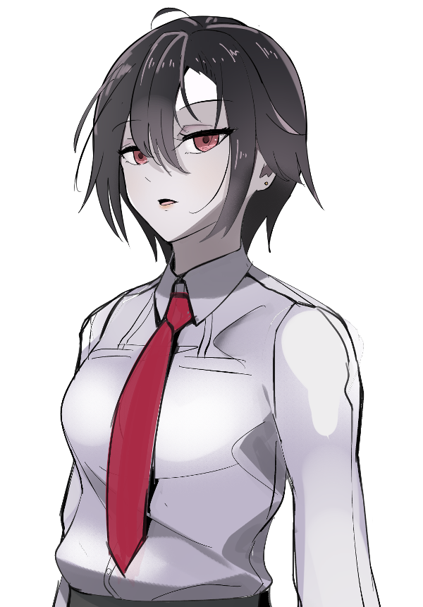
鏡 千明 :
高等部二年、鏡千明！ ダウナー吸血鬼女子高生探偵という属性が渋滞しているPC1！
鏡 千明 :
元は街の有力者一族の生まれで生まれつきのオーヴァードだったけど、一族がFHと接近したことで血みどろの争いになり、両親を失って逃げるようにこの学園にやってきたという経歴の持ち主！
鏡 千明 :
そういう過去があるので他人と事件に巻き込みかねないような近しい関係になることを由としないけど、近づかれたら断れない押しへの弱さがあります。
鏡 千明 :
面倒くさがりだけど、周りが事件に巻き込まれたときは命張って助けに行く、そんな学園の影の守護者です。
鏡 千明 :
シンドロームはノイマン／ブラム＝ストーカー！ひょろいけど今回唯一の前衛です。ちょっと面倒な性格かもしれんけど仲良くしてね！
鏡 千明 :
PLは探偵やったことないんだけど、なんとか探偵っぽいRPができるよう頑張ります。こんなところで！
GM :
大丈夫です、それ言ったらPLは皆オーヴァードじゃないから！
鏡 千明 :
一理ある🕵
GM :
では、そんな鏡千明のハンドアウトはこちら
■PC1用ハンドアウト
ロイス：月城優花（つきしろ・ゆうか）
推奨感情 P：友情 / N：不安
カヴァー/ワークス：高校生のUGNイリーガル
キミは私立清月女学院高等部に通うUGNイリーガルだ。
今年の春、キミは友人の日南菜乃の紹介で月城優花という女子生徒と知り合った。
優花はキミに憧れのような感情を抱いているようで、キミのことを先輩としてよく慕ってくれている。
そんな彼女が、二学期に入ってから学校をよく休むようになっていた。何かあったのだろうか。
GM :
後輩の優花が欠席しがちで心配って感じのハンドアウトです。
オープニングでは優花と出会った時の回想がメインになるので、友達になってあげてください。
鏡 千明 :
了解！数少ない友達を大切にしなきゃ…！
GM :
ありがたいね！とても楽しみ
GM :
では次！PC2お願いします！
百雲モクモ :
はい！！！
百雲モクモ :
百雲モクモ、17歳のギャルです！
良家の生まれだけどその本家がFHについたので両親と共に離反して、UGNチルドレンの活動と学業を両立するために私立清月女学院へやってきました！
百雲モクモ :
ギャルという字の如く、モクモは割とチャラい性格してます！でも育ちは良いので節度は弁えてる……ハズです。軽快なフットワークでPC・NPCに絡んでいこうとPLは画策しています。
百雲モクモ :
シンドロームはピュアソラリス。吹いた煙に毒を含ませて敵を邪毒漬けにしちゃう戦法です！たぶん戦闘より情報収集の方が役に立てる可能性も無きにしも非ず
百雲モクモ :
そんな感じのモクモクギャルです！よろしくおねがいします！
GM :
めっちゃもくもくしとる！ギャルかわいいね
GM :
そんな百雲モクモのハンドアウトはこちら
■PC2用ハンドアウト
ロイス：日南菜乃（ひなみ・なの）
推奨感情 P：信頼 / N：劣等感
カヴァー/ワークス：中学生か高校生のUGNチルドレン
キミは私立清月女学院に通うUGNチルドレンだ。
今年の二学期、キミはUGNからの指示で清月女学院に転入した。
転入してから、キミは生徒会長を務めている日南菜乃に色々と面倒を見て貰っている。
そんな菜乃は最近元気がないように見える。何か悩み事があるのかもしれない。
GM :
生徒会長の菜乃が元気ないよって感じのハンドアウトです。
オープニングでは転入初日に菜乃に絡まれる時の回想がメインになるのでなんやかんやお節介焼かれてください。
GM :
嘘です、転入から二日目！初日はばたばたしてるからその翌日にしたんだったよ
百雲モクモ :
2日目だった！菜乃ちゃん会長とたくさん仲良くしたいね！
GM :
菜乃も明るい系だから結構仲良くなれそうな感じあんね…！
GM :
では次！PC3お願いします！
神渡 ヒサメ :
うす！
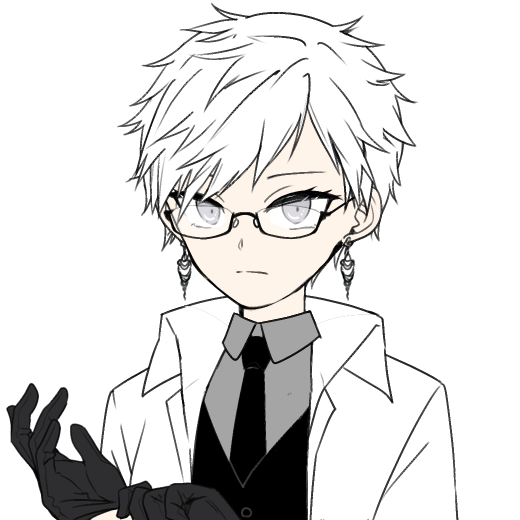
神渡 ヒサメ :
「語れ、聞こう。生徒の悩みに乗るのが俺の領分。どんな内容でも構わない。」
“投げ凍てる骨矢”(クライオダーツ)、
神渡 氷雨(みわたり ヒサメ)
固い表情の養護教諭にしてUGNエージェントです。26歳。
独特の口調も相まって威圧的な印象を与えますが、内心は非常に優しく、他者への思いやりに溢れた人物です。
かつてはUGN日本支部直属の対ジャーム捕獲部隊《ソムヌスの枝》 に所属していました。
シンドロームはサラマンダー/エグザイルのクロスブリード。
戦闘では、左手の指の骨を引き抜いて変化させたダーツを投擲します。
凍りついた骨のダーツが一度突き刺されば、相手の身体の内外から熱を奪い続け、最終的に全身を凍結させます。
データとしては範囲射撃デバフアタッカー。
ガード値低下と重圧を与えてパーティーのダメージを通しやすくしつつ、《蘇生復活》に対する切り札として《クリメイト》を持ってます。
《骨の銃》《死招きの爪》で火力もそこそこ出せます。
神渡 ヒサメ :
以上！
GM :
口調がめっちゃ独特でびっくりしたやつ！
GM :
そんな神渡氷雨のハンドアウトはこちら
■PC3用ハンドアウト
ロイス：春日恭二（かすが・きょうじ）
推奨感情 P：好奇心 / N：憐憫
カヴァー/ワークス：UGNに協力可能なら何でも
キミはUGN清月女学院支部で任務に就くこともあるオーヴァードだ（学園の生徒ではない場合、UGNの手回しで教師等の職員の身分を持っていたり、入校許可を得ていることになる）。
ある日、キミは新月市の公園でFHエージェント"ディアボロス"春日恭二の姿を見かける。
キミには春日と幾度となく交戦した因縁があるが、その日の春日はキミに対してまるで敵意や戦意がなかった。
話を聞くと、任務失敗が続いて落ち込んでしまっているらしい。別にどうでもいいが、いい気味である。
GM :
なんか春日が落ち込んでるよって感じのハンドアウトです。
オープニングで春日と戦闘になることはないので、話に付き合ったりしてあげてください。
神渡 ヒサメ :
春日くんにも優しいヒサメさんです！
GM :
いい気味とかそんな思わなさそうだよ！春日も凹んでるので敵でも嫌ではないでしょう
GM :
では最後！PC4お願いします！
アスクレピオス :
はいなな！
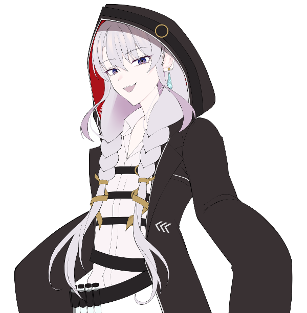
アスクレピオス :
名前はアスクレピオス！
アスクレピオス :
2500年弱も生きている古代種のオーヴァードであり、"魔法"と呼ぶレネゲイド操作技術を扱う古魔導師です！
アスクレピオス :
UGNでは「本部技術顧問」というエラい役職ですが、ほとんどお飾りみたいなものなので、大した仕事もせずに各国を回っています！
アスクレピオス :
今回、私立清月女学院には「世界史担当臨時教職員の蛇崩修吏」という身分で、二学期から潜入しています！
アスクレピオス :
イリーガルのJK二人には、UGN本部の人間という立場を敢えて隠して、「葉月真紀の知人」として事件解決に協力するつもりです！
アスクレピオス :
なお古くから続いている名家の末裔たるJK二人は、どこかで見覚えがあるような気がするとかしないとか！
アスクレピオス :
戦闘では、ユニークコードや《妖精の手》を使って判定の支援を行なう他、
アスクレピオス :
《ダンシングシミター》でRC攻撃も行ないます！
アスクレピオス :
が、大した火力は出ないと思います！本人も戦闘は苦手だと思っています！
アスクレピオス :
切札は《ナーブジャック》＋《フラットシフト》！相手に自傷させますよ！
アスクレピオス :
ちなみに《アスクレピオスの杖》を持ってますが、ぶっちゃけお飾りです！ モクモちゃんの医療トランクの方が役に立つと思います！
アスクレピオス :
以上！女好きみたいに振る舞うショタジジイをよろしくおねがいします！！
GM :
女だらけの学園にジジイが来たよ！たまに来るずんのナーブジャックキャラだ
アスクレピオス :
加えて今回は《闘争の渦》によって連打も効くナーブジャック特化型キャラだよ！🐍
GM :
こわぁ～…バックトラックで有利だ
GM :
そんなアスクレピオスのハンドアウトはこちら
■PC4用ハンドアウト
ロイス：葉月真紀（はづき・まき）
推奨感情 P：連帯感 / N：不安
カヴァー/ワークス：UGNに協力可能なら何でも
キミはUGN清月女学院支部で任務に就くこともあるオーヴァードだ（学園の生徒ではない場合、UGNの手回しで教師等の職員の身分を持っていたり、入校許可を得ていることになる）。
最近、新月市内でオーヴァードを標的とした襲撃事件が相次いでいた。
UGN清月女学院支部の支部長、"ペーパームーン"葉月真紀もその襲撃に遭って負傷してしまっている。
キミは葉月に依頼され、他のPC達と共に事件の調査を行なうことになった。
GM :
清月女学院のUGN支部長から仕事を依頼される感じのハンドアウトです。
オープニングではPC皆に召集がかかるけど、このHOのPCは一番早く支部に来たことになるので、葉月から先に依頼の内容を聞くことになるよ。
アスクレピオス :
よ～～し！仕事ついでにマキちゃんを口説いていくぞい！！
GM :
仕事中やぞ！！！
GM :
ではこれで、PCとハンドアウトの紹介は以上。
GM :
最後に、それぞれのPC間ロイスの感情について報告してもらいます。
GM :
今回のセッションではPC達は初対面ではなく、すでに清月女学院のUGN支部に関わるメンバーとして面識があるということになっているので、関係をある程度分かりやすくするために採用しました。
GM :
PC間ロイスは千明→モクモ→氷雨→アスクレピオス→千明の順番で取ってもらいます。
GM :
そういうわけで、まずは千明からモクモへのロイス感情の報告をお願いします。
鏡 千明 :
はいはーい！
鏡 千明 :
百雲モクモ 〇親近感／食傷 で取得します！ 同じように実家のいざこざがあったというので内心は親近感があるけど、ちょっと一緒に仕事するの疲れそうだな～って感じで！
GM :
ギャルだからね、仕方ないね
鏡 千明 :
陰キャはギャルが苦手、この卓を通して克服していきたい
GM :
モクモちゃんの陰キャに優しいギャルを信じていけ
GM :
では次、モクモから氷雨へのロイス感情の報告をお願いします。
百雲モクモ :
イェイ！氷雨センセーには「〇連帯感/恐怖」で取得します！雰囲気が威圧的でちょっと怖いけど、悪い人には見えないので✌
GM :
優しい人だしね、良いと思う思う
GM :
では次、氷雨からアスクレピオスへのロイス感情の報告をお願いします。
神渡 ヒサメ :
アスクレピオスこと蛇崩教諭に対しては「尊敬/不安のP」！
バックボーンの全てを知らずとも、間違いなく偉大な人物だとは分かるしリスペクトもする
それ故に品のない言動をするのは惜しいなあ、大丈夫かなあ、って感じ
GM :
これは仕方が無さ過ぎる感情だよ
GM :
では最後、アスクレピオスから千明へのロイス感情の報告をお願いします。
アスクレピオス :
懐旧/疎外感のP表でロイスを取得するぞい！懐旧については「先祖と会った事あるかも」とかそんなところじゃ！
GM :
なんか面影があるとかそういうやつだ
アスクレピオス :
そういうヤツじゃのう、それにしてもカワイイのう
鏡 千明 :
セクハラ！
GM :
かわいいって言っただけで…
アスクレピオス :
まだ可愛いと言っただけじゃが！？！？！？！？
GM :
普段の行いかもしれない
鏡 千明 :
最近のJKは判定が厳しい
アスクレピオス :
普段の行い！？！？まだ動かしてもおらんが！？！？！？！？
GM :
キャラシとTL情報のせいで……それはともかく、PC間ロイスの紹介は以上で！ロイス取ってないメンバーも面識はあるので、その辺の関係については必要なら暇な時に雑談とかで相談してると良いと思います
アスクレピオス :
うむ、承知したぞい
百雲モクモ :
おけまるだし
GM :
それでは、これからメインプレイを始めて行こうと思います。
GM :
よろしくおねがいします！！
神渡 ヒサメ :
よろしくお願いします！！
あとお誕生日おめでとうございます！！
アスクレピオス :
よろしくおねがいするのじゃ！！
鏡 千明 :
よろしくおねがいします！！！！
百雲モクモ :
よろしくおねがいします！！！！！！
GM :
わぁい、ありがとうございます！
メインプレイ
シーン１ 太陽と月
GM :
鏡千明のオープニングです。
登場侵蝕のダイスをお願いします。
鏡 千明 :
32+1d10(32+1D10) ＞ 32+10[10] ＞ 42
鏡 千明 :
初っ端からでかいぞ！
GM :
そういうこともありんす
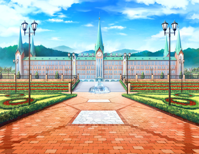
GM :
────私立清月女学院。
それは東京郊外にある街・新月市に存在する中高一貫の女子校の名前である。
GM :
とある財閥が出資して作ったと言われているこの学園は昔から有名だった。
広大な敷地に建てられた豪華絢爛な校舎。そして武道館や劇場ホールなどの充実した施設。
何度も行われた改修工事で学園は美しく保たれ、創設50周年を迎えてもその人気は衰えておらず、入学希望者は非常に多い。
GM :
そんな学園に通うキミは、高等部二年生に上がって間もない頃にある少女と出会った。
これから辿るのは、その時の記憶だ。
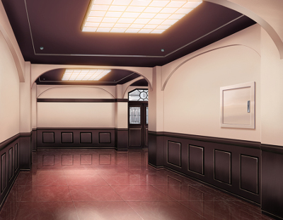
清月女学院 高等部校舎 三階廊下
GM :
────四月。
放課後、キミが廊下を歩いていると、突然後ろから呼ぶ声がする。
日南菜乃 :
「おーい、千明ー！」
GM :
振り返ると、元気に声をかけて来たのは生徒会長の日南菜乃だった。
学園の生徒全員の顔と名前を憶えているらしい菜乃の交友関係は異常に広く、キミも彼女とは友人である。
鏡 千明 :
突然大きな声で呼ばれ一瞬びくりとするが、見知った相手であることを確認すると安堵する
鏡 千明 :
「菜乃か……なんか用？」
日南菜乃 :
「うん！」
日南菜乃 :
「これからちょーっとだけ時間もらえないかな？千明に会ってほしい子がいるんだよ」
鏡 千明 :
「あー……」 口を半開きにして、眉をぴくりと動かして渋る
日南菜乃 :
「あ、もしかして忙しかった？」
鏡 千明 :
「（嘘もつきづらいな……）」
鏡 千明 :
「別にそういうわけじゃないけど……」
日南菜乃 :
「そうなの？」
日南菜乃 :
「……あ、そっか。いきなり顔も名前も知らない人に会ってほしいって言われても困るよね」
鏡 千明 :
「うん、そう。そういうこと」
鏡 千明 :
「（本当はそれ以外にもあるけど）」
日南菜乃 :
「じゃあ、どんな子かある程度分かれば会ってくれるってわけだ！」
鏡 千明 :
「……とりあえず話してよ（なんでこう的確に逃げ道を潰してくるんだ……）」
日南菜乃 :
「うん！」
日南菜乃 :
「会ってほしい子はね、あたしの幼馴染なんだよ」
日南菜乃 :
「うちの中等部の三年生で、名前は月城優花っていうの」
日南菜乃 :
「優花、なんかキミが気になってるみたいでさ。でもちょっと恥ずかしがり屋だから、あたしにお願いしたってわけ」
鏡 千明 :
「中等部、二つ下か」
鏡 千明 :
「別にいいけど……なんでまた私なんか」
鏡 千明 :
心当たりはなくはないが、自分を追ってくるのは大抵は『日常』を壊す厄介者の類だ
日南菜乃 :
「うーん、なんでだろうねぇ。絶対悪い意味ではないと思うけど……」
日南菜乃 :
「あたしの口からは言えないなあ。気になるなら会ってみる？」少し口元をにやつかせて
鏡 千明 :
「（絶対面倒なことになりそうだけど……）」
鏡 千明 :
「わかった。行こう」 探偵として『謎』は放っておけない
日南菜乃 :
「ほんと？やった、ありがと！じゃあついてきて！」 先導して廊下を歩いていく
鏡 千明 :
「（うまく丸め込まれたな……）」 猫背でついていく
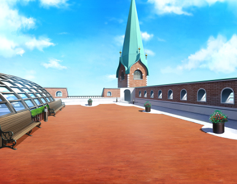
清月女学院 高等部校舎 屋上
GM :
キミは菜乃に連れられて階段を登り、屋上へとやってくる。
そこには、一人の女子生徒が待っていた。
日南菜乃 :
「優花、連れて来たよ～！」
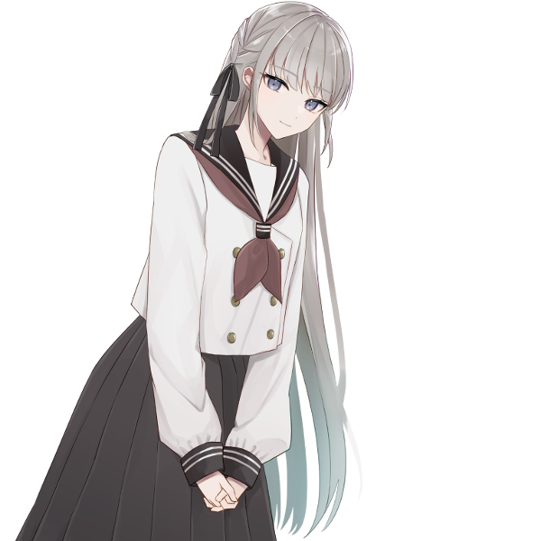
月城優花 :
「あ……菜乃ちゃん。それと……」
GM :
優花と呼ばれた女子生徒が振り向き、キミと目が合った。
鏡 千明 :
「私、二年の鏡。君が月城さん？」 確認するように
月城優花 :
「は……はい！そうでｽｯ……！！」 緊張してるのか、声を裏返らせながら返事をする
鏡 千明 :
「っ……」 不意打ちでちょっと笑いそうになって横を向いて誤魔化す
鏡 千明 :
「……私に何か用？」 にやけるのを我慢しながらとりあえず話を進める
月城優花 :
「……！え、えっと、あの……」
月城優花 :
「す、すみません、今……わたしの返事変だったですよね……？」 誤魔化したのに気付いたようで、恥ずかしさからぷるぷると震えて
鏡 千明 :
「いや、別に……私もあんまり人のこと言えないし」
鏡 千明 :
言ってから「私も」から後は完全に余計なこと言ったなと即後悔
鏡 千明 :
「わざわざ私を呼んだってことは、何か困りごと？ 何でも屋は本業じゃないけど、私にできることなら言ってみて」
月城優花 :
「あ……ありがとうございます。あっ、そ、そう……ですね……えーっと……」
日南菜乃 :
「いや待って待って。ごめん千明、そういう話じゃないんだよ」 困ったように優花を見ながら
鏡 千明 :
「？」
日南菜乃 :
「ほら、優花」
月城優花 :
「あ、う、うん……」
月城優花 :
「あの……えっと、わたし……先輩のことが、気になってて……」
月城優花 :
「その……一度、直接話してみたいなって……思ってまして……」
月城優花 :
「だ、だから、困りごととかはなくて……す、すみません……っ」 両手の指を絡めながら、目を伏せる
鏡 千明 :
「……」
鏡 千明 :
「（なんか特に慣れてないな、こういうの……とりあえず返事しないと）」 顔が熱くなるのをかしずく歯車で抑えながら
鏡 千明 :
「大丈夫。えっと、私も話すの苦手で」
鏡 千明 :
「君が思ってるような面白いこと言えないかもしれないけど、それでもよかったら」 すぐ近くまで歩いて
鏡 千明 :
「自分のこと話すのは苦手だけど、話聞くのはそんなに苦手じゃないから……」
鏡 千明 :
「とりあえず、月城さんのことを教えてほしいな」 《かしずく歯車》で下手な笑顔を作る
月城優花 :
「え……！？あ、え……！？」 近付かれて笑顔を見て、顔が赤くなっていく
月城優花 :
「あ、あの、わたしから……呼んでおいて、アレなんですけど……いいんですか……？」
月城優花 :
「いきなりこんな風に話しかけて来て、迷惑とかじゃ、ないのかなって……」
鏡 千明 :
「大丈夫。全然気にしないから」
鏡 千明 :
「（……突っぱねるべきだったかな）」 ワンテンポ遅れて、頭の中を色んな情報が渦巻く。
鏡 千明 :
でも言ってしまったものはしょうがない。
月城優花 :
「そ、そうですか……ありがとうございます……！」 少し安心したように、小さく笑みを見せて
月城優花 :
「えっと、わたしのこと……ですよね……」
月城優花 :
「わたしは、この街で生まれて……菜乃ちゃんとはご近所さんで、昔から一緒だったんです」
月城優花 :
「それで、菜乃ちゃんと一緒の学校がいいなって思って、清月に入って……。今まで、他の先輩に興味とかなかったんですけど……」
月城優花 :
「去年、たまたま鏡先輩のこと……見かけて……それで……一目惚れしたっていうか……」
月城優花 :
「…………」
月城優花 :
「あ、いや、ちょっと違う！違います！恋愛的な意味じゃなくて、友好的な！友達になれたらいいなって！！日本語って難しいですね！！！」 顔を真っ青にし、目をグルグルと回しながら早口で言い訳する
鏡 千明 :
「え、あ、うん。大丈夫。うん」 一瞬思考が飛んで、慌てて返事する
月城優花 :
「は、はい。へ……へへ……」 小さく震えながら変な笑みを浮かべて
日南菜乃 :
「もうめちゃくちゃだよ！」
日南菜乃 :
「ごめんね、こんな子なんだけど……悪い子じゃないっていうのはわかってくれたよね？」
鏡 千明 :
「うん。それは充分伝わった」
鏡 千明 :
「（とりあえずFHの刺客とかじゃないか……）」 菜乃の言葉で落ち着き、少し緊張を解く
鏡 千明 :
「（でも……）」
鏡 千明 :
興味。こうして話してみて、純粋に、よく知りたくなったかもしれない。
鏡 千明 :
「友達ってこうやって改まってなるものじゃないと思うけど……」
鏡 千明 :
「私、鏡千明。高校生探偵なんて言う人もいるけど、実際は家業継いでるだけでこんな冴えない感じ。こんな私でよければ、よろしく」
鏡 千明 :
右手を出す。
月城優花 :
「……！」
月城優花 :
「は、はい、わたし……月城優花、です」
月城優花 :
「……」 一旦胸に手を当てて、深呼吸してから
月城優花 :
「よろしくお願いします、先輩……！」 笑顔で、握手に応じる
鏡 千明 :
「ん、よろしく」 自然に、笑ったか笑ってないかわからないくらいの笑顔で
月城優花 :
「はい……！えへへ……」 嬉しそうにキミの目を見て
日南菜乃 :
「ふふ……よかったよかった」 その様子を見て一安心して
日南菜乃 :
「ねえ、これから三人で一緒に帰らない？それでどっか寄り道しようよ」
日南菜乃 :
「ずっと何もないここで話すより、なんか買い食いでもしながらの方が話しやすいでしょ！」
鏡 千明 :
「そっか。じゃあファミレスでも行こうか」
鏡 千明 :
このあたりにUGNの息がかかった店があることを思い出す。
鏡 千明 :
「今日は私が出すよ。後輩に払わせるわけにいかないし。代わりに店は選ばせて」
月城優花 :
「え！？そ、そんな……！いいですよ……！？」
日南菜乃 :
「お、太っ腹だ～。じゃあお言葉に甘えちゃお！」
鏡 千明 :
「……月城さんも幼馴染を見習って……見習いすぎないほうがいいな」 ちょっとあきれ顔で
日南菜乃 :
「まあまあ、いいじゃんいいじゃん！よーし、いっぱい食べるぞ～！」 楽し気に階段の方へと歩いて行って
月城優花 :
「もう、菜乃ちゃんったら……」
月城優花 :
「ごめんなさい、先輩……。それなら、ごちそうになります……ね？」
鏡 千明 :
「大丈夫、心配いらない程度には稼げてるから」 少しだけ誇らしげに
鏡 千明 :
「じゃ、行こう」 歩幅を合わせて階段へ
月城優花 :
「は、はい……！」 嬉しそうに小さく笑って、ついていく
GM :
……そうして、キミは月城優花と友人になった。
中等部と高等部で校舎が別れているため、同じ学年の友人と比べると会う機会は少ない。
しかしキミは優花と昼食を一緒に摂ったり放課後に遊んだりなどして、彼女と良い関係を築くことが出来ていた。
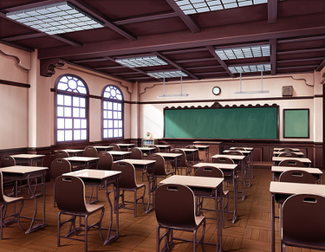
清月女学院 高等部校舎 二年生教室
GM :
────時は現在に戻り、九月。
五限と六限の間の休憩時間、キミの通信端末に一本のメッセージが届いた。
GM :
送り主はUGN清月女学院支部の支部長、葉月真紀。
任務の依頼があるらしく、放課後にUGN支部のある学園の図書館に来て欲しいとのことだった。
GM :
しかし、任務は大事だがキミは今優花のことが少し気になっている。
何故なら二学期が始まってから約二週間、優花がずっと学校を休み続けているからだ。
GM :
体調不良を理由に休み続けているらしいが、電話をかけても出ないし、メッセージを送っても全て無視されてしまっている。
優花は今までちゃんと登校していたし、キミからの連絡にもすぐに返事をしていた。こんなことは初めてだ。
鏡 千明 :
「はぁ」 端末を閉じる。行かないわけにはいかない。
鏡 千明 :
私は影の守護者。この街に何かが起きればすぐに対処するのが役目だ。
鏡 千明 :
何かが起きたときにすぐに私を頼って、平穏が戻ればすぐに私のことを忘れる。それでいい。
鏡 千明 :
だから。
鏡 千明 :
何事もないときは楽しそうに話してくれるのに、何か困ったことがあるときに限って私と話さない。
鏡 千明 :
そんなことをされると、困る。
鏡 千明 :
「……まともじゃないな」 血液の流れを抑える。とりあえず、UGNの指示に従わなければ。
GM :
シーン終了。
GM :
HOロイス：月城優花の感情を教えて下さい。
鏡 千明 :
月城優花 〇好奇心／偏愛 でロイスを取ります！
GM :
了解です、では次のシーンへ。
シーン２ 生徒会長
GM :
百雲モクモのオープニングです。
登場侵蝕のダイスをお願いします。
百雲モクモ :
1d10+33(1D10+33) ＞ 3[3]+33 ＞ 36
GM :
UGNチルドレンであるキミは、UGNからの指示で今年の二学期から清月女学院に転入した。
これから辿るのは、転入して間もない頃の記憶だ。
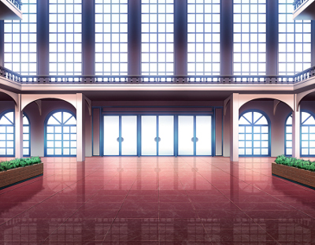
清月女学院 高等部校舎 昇降口
日南菜乃 :
「ねえねえ、キミが百雲モクモさん？」
GM :
────九月上旬。
転入して二日目の放課後。
いきなりキミのもとにやってきたその女子生徒は、そうキミに声をかけた。
百雲モクモ :
「おわっ！？ あ、あたし？」
慣れない場所で緊張していたのか、菜乃の声にびっくりしている
百雲モクモ :
「そ、そう！ あたしこそ百雲モクモだし！ 愛称はモクモでもモモちゃんでも良いし！」
百雲モクモ :
胸を張って名乗り上げるが、若干緊張（アガ）っているのが良くわかる
日南菜乃 :
「だよね！それなら、モモちゃんって呼ぼうかな～」
日南菜乃 :
「初めまして、あたしは日南菜乃！菜乃ちゃんって呼んでいいよ！」 楽し気に笑って
百雲モクモ :
「……！ 菜乃ちゃんね、チョー可愛いじゃんっ！」
緊張が解けたのか少し表情筋を緩ませて
百雲モクモ :
「んで、その菜乃ちゃんは～……あたしになんか用アリ？」
百雲モクモ :
不思議そうに首をかしげて菜乃を見つめる
日南菜乃 :
「うん、大アリ！」
日南菜乃 :
「昨日来たばっかりだし、この学園のことまだ全然知らないよね？だからあたしが案内してあげたいな～って思ってさ」
日南菜乃 :
「菜乃ちゃん、チョー可愛い上に生徒会長なので！」
百雲モクモ :
「デジマ！？ 菜乃ちゃん生徒カイチョー！？」
ぎょっ
百雲モクモ :
「え、ええと先程は不遜な態度をとってしまい誠に申し訳なく……」
百雲モクモ :
本家で仕込まれた上下関係のせいか、とてもお堅い社交態度にチェンジしている
日南菜乃 :
「いやいやいや！？なんでそこで畏まるの！？」
日南菜乃 :
「別に生徒会長だからって、他の生徒より偉いわけじゃないからね！？」 困惑してる
百雲モクモ :
「んえ、そうなの……？ なーんだ、生徒カイチョーって学院を牛耳る首魁とかじゃないんだ！ 緊張して損しちゃったし！」
いつの間にかしていた正座のポーズから軽快に立ち上がる
百雲モクモ :
「それで、ここを案内してくれるんだっけ！ それチョー助かる～～～！ デカすぎて体育館に行こうとしたら音楽堂に出ちゃうレベルだったから！」
日南菜乃 :
「そんな生徒会長多分漫画の中だけだよ、うちはそんなんじゃないからね？」
日南菜乃 :
「まあでも一瞬断られるかと思ったけど、それなら良かった！じゃあさっそく行こうか、ついてきて！」 歩き出す
百雲モクモ :
「ラジャー、着いてくッス！」
緩い敬礼をしてから菜乃の後ろをついていく
GM :
そうして、キミは菜乃に案内されて学園を歩き回った。
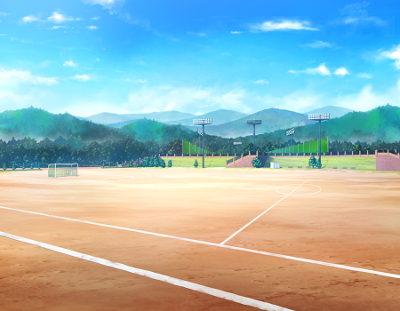
GM :
グラウンド……。
GM :
体育館……。
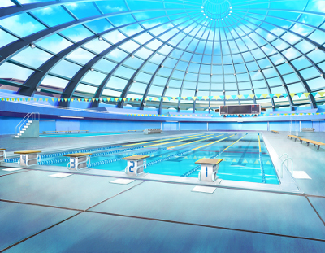
GM :
屋内プール……。
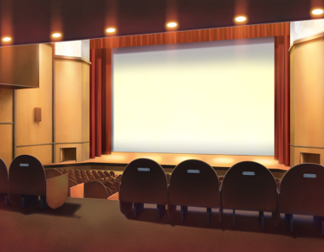
GM :
劇場ホール……。
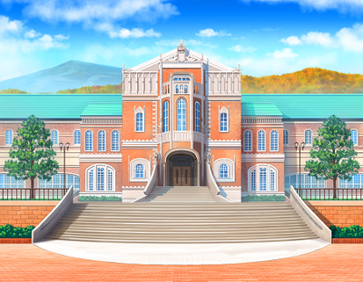
GM :
図書館……。
GM :
その他にも様々な場所を巡ったが、共通するのはどこも綺麗で、普通の学校と比べて巨大だったことだ。
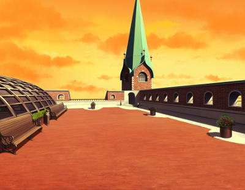
清月女学院 高等部校舎 屋上
GM :
そして最後に、キミは高等部校舎の屋上に案内された。
いつのまにか西の空がオレンジ色に染まってきている。
日南菜乃 :
「どう？綺麗でしょ！」
GM :
菜乃はまるで自分のことのように誇らしげに言いながら、屋上からの景色を示す。
屋上からは学園の敷地内が一望出来た。今まで案内された施設も全て見えるだろう。
百雲モクモ :
「おおお、チョー映えスポットじゃん！ やば～、無限に眺められる絶景～……」
スマホを取り出して撮影音が連続して鳴る。連射機能を使用した撮影だ。
日南菜乃 :
「ふふっ、でしょでしょ～」 どやっと笑う
日南菜乃 :
「どうだった？この学校、モモちゃんは気に入りそう？」
百雲モクモ :
「そりゃあもう、モチのロンっしょ！ 学院なのに色んな施設をギュっと凝縮したような場所なのインパクトがデカすぎるのも気に入ったし！」
百雲モクモ :
「それと、最大の決め手は～……」
菜乃の方を振り向いて
百雲モクモ :
「こんな良い人が生徒会長なら、チョーイイ感じの学院生活を送れそうだし……ね！」
夕暮れに染まった頬でにっこりと微笑んで見せた
日南菜乃 :
「え……」 予想外の返事だったのか、同じく夕焼けで頬が染まって
日南菜乃 :
「え～……！びっくりした！そんなこと言ってもらえる？」
日南菜乃 :
「ふふっ、嬉しいな！あたし、この学校が好きで生徒会長やってるからさ！」 笑顔になって
百雲モクモ :
「もちもちのもちろん！ ここまでしてもらって気に入らないとかマヂあり得ないしっ」
百雲モクモ :
「菜乃ちゃんカイチョーが好きな学校なら、悪いようにはならないっしょ」
日南菜乃 :
「まあね～」 調子に乗ってドヤドヤっと胸を張って
日南菜乃 :
「……うん、そこまで好印象だったなら、ほんとに良かった。ちょっとあたし、昔のこと引きずって心配しすぎてたのかも」
百雲モクモ :
「……昔？ なにか苦い思い出？」
その言葉のあとに、「あっ」と短く零して余計なことを言ったと口を塞ぐ
日南菜乃 :
「……あ、ううん！苦いって程じゃないから大丈夫だよ」
日南菜乃 :
「そうだな……せっかくだし聞いてくれる？信じられないような話かもしれないけどさ」
百雲モクモ :
「うん、あたしで良ければ全然聞く。これでも口は堅い方だし？」
口にチャックをかけるような仕草
日南菜乃 :
「ふふっ、ありがと。まあ、そんな秘密の話ってわけでもないんだけどね」 その仕草にくすっと笑って
日南菜乃 :
「……昔ね、モモちゃんみたいにうちに転入してきた子がいたんだ」
日南菜乃 :
「でもその子、一ヵ月くらいで急に学校に来なくなって……。いつの間にか親の都合とかで別の学校に行ったらしいんだけど、そこが凄く遠くってさ……」
日南菜乃 :
「連絡先も交換してたんだけど、なんかいなくなった途端返事も無くなっちゃって……」
日南菜乃 :
「まるで最初からいなかったみたいに、急にその子の全部が消えちゃったことがあるの」
日南菜乃 :
「しかもそれがその子だけじゃなくてね、そういう似たようなことが二度三度と起こったことがあったんだ」
日南菜乃 :
「だから、新しく転入生が来るって聞いてから……もしかしてその子もすぐにいなくなっちゃうのかな……なんて思っちゃってさ」 少し悲し気な瞳で、夕焼けに染まった学園の景色を眺める
百雲モクモ :
「それは……」
百雲モクモ :
思い当たることは、たくさんある。急な転校と音信不通はレネゲイドに関わる組織の隠ぺい工作だ。モクモはそんな話を幾度なく耳にしたことがある。
百雲モクモ :
「……それは、なんか悲しい話だね」
だが菜乃には伝えない。伝えられない。日常側の人間にこうした不利益を被らせるのは思う所があるが、同時に彼らを守る為にあるからだ。
百雲モクモ :
「でも、その点に関しては安心して欲しいし！ 転校する気なんかぜんっっっぜん、思ってないから！」
サムズアップしながら、菜乃を元気づける為に笑ってみせる
日南菜乃 :
「……うん」 その笑顔を見て、元気を取り戻したように小さく笑い
日南菜乃 :
「よかった！っていうか、そりゃそうだよね！」
日南菜乃 :
「二度あることは三度あるって言っても、四度目があるわけないし、モモちゃんには関係ないわけだし！」
日南菜乃 :
「なんかごめんね？あと、ありがと！」 ノリ良く、サムズアップを真似して笑う
百雲モクモ :
「ぜーんぜん気にしなくてイイし！ それにあたし、人より頑丈だから事故に遭っても多分ヘーキだよっ。うわまぶしっ」
しゅっしゅっ、と夕日に向かってシャドーボクシング
日南菜乃 :
「そうなの？って、そこはまず事故に遭わないように気を付けてよね～」 キミの動作に笑って
百雲モクモ :
「それはそう！ 痛い目なんか遭わない方がマシ！」
声をあげて笑ってみせる